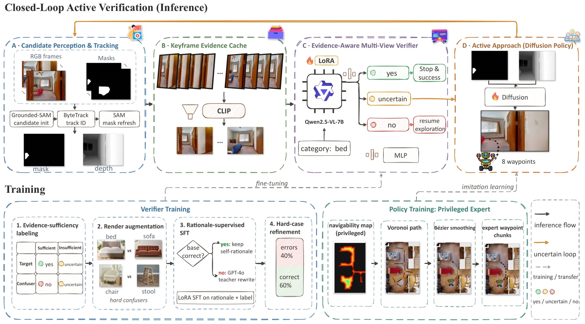
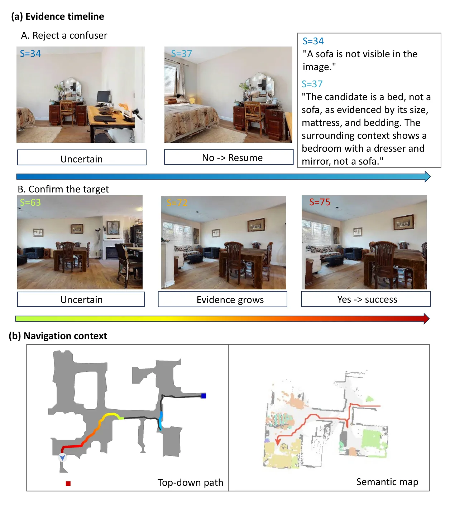
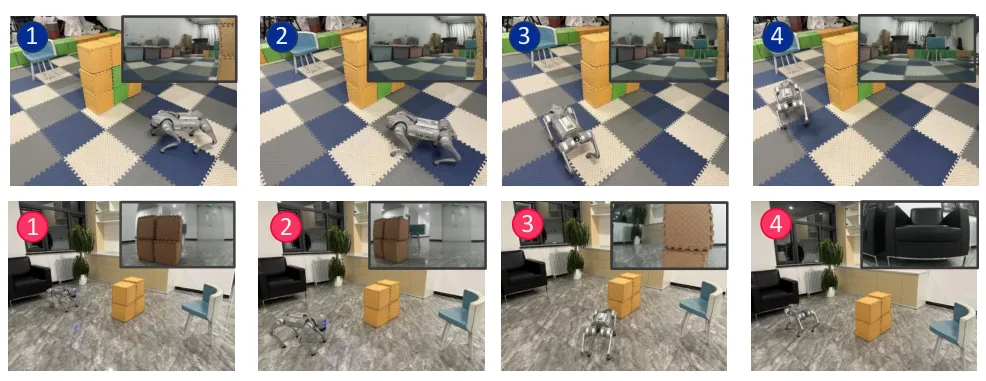

CLOSER：面向具身目标导航的证据感知主动视觉验证
CLOSER: Evidence-Aware Active Visual Verification for Embodied Object-Goal Navigation
把二分类验证器换成三态 + 主动靠近：不确定时不是硬判，而是去取更多视角。8 个 ObjectNav 系统 × 3 个数据集共 24 对全部提升（SR +3.6 平均、最高 +4.9；SPL +2.0、最高 +3.1）。VLFM 在 HM3D v2 上 SR 63.6→66.1、误停 19.4→6.4、误拒 13.8→9.3；本地 perceiver 三态准确率 86.1%，高于 GPT-4o-mini API 的 82.4%，延迟 0.28 s/视图、零查询成本。
avg SR gain
avg SPL gain
tri-state accuracy
latency / view
作者、单位与技术谱系 · Research context
作者与单位
研究脉络
- VLFM（Yokoyama et al., 2024）方法基座关系：宿主系统与最强基线：CLOSER 只替换其停止规则，闭环消融全部在 VLFM + HM3D v2 上做。[论文 Table III/IV]
- STRIVE / 视角再验证（2024–2025）问题前作关系：此前的“走近再看一眼”只选单一再验证视角；CLOSER 推进到多视图缓存 + 学习式接近策略。[论文 Table VIII]
- ApexNav（2025）问题前作关系：已经在做候选级被动多视图融合，是 CLOSER 增益最小（+0.7~+1.8 SR）的对照，用来证明“主动取景”带来额外信息。[论文 §IV-B 与 Table III]
合作网络
- 北京大学先进制造与机器人学院（八人同单位）Pengying Wu → Chang Liu关系：共同署名（同单位）[arXiv HTML 作者块]
- CLOSER → VLFMCLOSER → VLFM关系：技术依赖（宿主系统）[论文 §IV 与 Table IV]
- CLOSER → Grounded-SAM / SAM3CLOSER → Grounded-SAM / SAM3关系：技术依赖（检测与掩码）[论文 §III-D 与 §IV-A]
作者与单位取自 arXiv HTML 作者块；宿主与检测依赖来自实验章节。论文未公开代码链接，因此没有写入代码仓库关系；未推断导师/师生关系。
方法本质拆解 · What actually changed
是不是微调？
是微调：在开源 VLM（Qwen2.5-VL 一类）上做 LoRA，训三态 perceiver（78,350 个单视图检测样本，来自 108 个 HM3D 训练场景），再训 8,070 条多视图序列上的融合 MLP。扩散策略另外用专家示范做 BC 训练。宿主导航系统保持原样，不参与训练。
加了什么先验与约束？
证据层面的约束是“充分性谓词”：只有视角满足一定距离/可见比例才允许判 yes/no，否则只能判 uncertain；行动层面约束是只用跟踪掩码与深度（不用语义地图）靠近，并在 1 m 内触发回退，防止无限接近。
推理时到底做了什么？
候选出现 → 取当前视角三态概率 → 用 CLIP 多样性从缓存选 K=4 视角 → MLP 融合 → 若仍 uncertain 则扩散策略出靠近动作 → 新视角入缓存再融合。整个过程是闭环的，每一步都可能改变结论；没有全局重规划，也没有对宿主系统的改动。
方法本质是什么？
本质是把“停止”从一个一次性分类动作改写成序贯证据采集：不确定性成为触发行动的信号，而不是必须被强行消解的噪声。它改变的是决策时机的分配——把预算从“更早停下”挪到“多看一眼”，从而同时降低误停与误拒。
输入检测候选与在线视角流，在证据不足时输出“不确定”并驱动智能体靠近取景，再用多视图融合判定，直接效果是误停与误拒同时下降、SR/SPL 同升。

桥接价值Bridge
桥接价值
这篇论文处理的是“证据不足时该不该下结论”，而这正是可靠状态估计里最容易被工程实现忽略的一环：我们通常在退化或弱观测时直接给一个带大方差的估计，而 CLOSER 的选择是“标记不确定，然后主动去取能消解不确定的观测”。它的三态标签（目标/非目标/不确定）+ 多样性选视角 + 主动靠近，可以整体搬到回环候选、地图点插入、异常检测这些“先判后不可逆”的决策点上。
方法与模块Method
方法摘要
三段式：①验证器，微调开源 VLM 对候选的每个视角输出三态与理由；②证据缓存，用 CLIP 嵌入的多样性门从跟踪到的视角里挑互补的 K=4 个，再用轻量 MLP 融合逐视角概率；③决策与行动，融合后仍不确定就交给扩散策略（Voronoi–Bézier 专家示范训练的 BC）只依据跟踪掩码与深度靠近候选，直到判定明确或触发 1 m 近距回退。整个栈本地运行、可插拔到已有 ObjectNav 系统，不重训宿主。
可迁移模块
第一是三态 + 延迟决策的证据规则：把“不确定”做成显式状态，避免二分类器在证据不足时被迫表态（论文里本地二分类版误拒率反而从 13.8% 升到 14.2%）。第二是多样性选视角：同样 K=4，CLIP 多样性选择把三态准确率从 80.7%（单帧）→83.5%（最近 K 帧）→86.1%（多样性）。第三是“主动获取”的策略层：扩散策略把不确定候选的正确判定率从 76.5%（确定性 BC）提到 83.6%，额外路径从 2.08 m 降到 1.69 m。

证据Evidence
关键证据与数字
端到端：8 个系统 × 3 个数据集共 24 对，SR 全部提升，平均 +3.6（最高 +4.9，L3MVN），SPL 平均 +2.0（最高 +3.1）；VLFM/HM3D v2 从 63.6/32.5 升到 66.1/34.1，误停 19.4→6.4、误拒 13.8→9.3，可归因于“停下”的失败从 33.2 点降到 15.7 点。消融：只加三态不加主动靠近，误拒升到 15.1%（延迟的候选被放弃）；加扩散策略后回到 9.3%。成本：本地 perceiver 86.1% 对 GPT-4o-mini API 82.4%，0.28 s/视图对 1.38 s，每千次查询 0 对 0.41 美元。
边界与下一步Limits & Next Step
边界与风险
评测主要在 Habitat（Gibson 1000、HM3D v1 2000、HM3D v2 1000 episodes），真机只有 Unitree Go2 两个室内场景的定性展示，没有真机 SR/SPL。类别限制在 Gibson 与 HM3D 共享的六类，MP3D 只用于候选级分布漂移测试；验证器依赖 Grounded-SAM 的检测与 SAM3 掩码，检测漏检时三态机制无从发挥。主动靠近会消耗 500 步预算、近距回退率 9.8%，SPL 虽升但路径成本真实存在；对“目标根本不存在”的 episode 没有机制。
下一步实验
把“不确定就延迟 + 主动取证据”搬到地图更新：在低纹理、动态遮挡、GNSS 多路径段，用多视角一致性 + 不确定性决定地图点是“写入/暂缓/丢弃”，记录误写率与召回，而不是只看 ATE。第二个实验是做阈值敏感性：论文的三态阈值（η±、α、β、γ）在验证集上选，我们要测它在跨场景（室内→车载）时是否退化，这决定它是“可迁移原则”还是“调好的仿真配方”。



